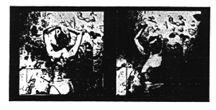

Brief commentary, new slants, current scholarly finds are invited for our Alerts section. Poets and scholars are equally welcome to comment.
Excerpts from "Destitution: A Tale" by Norma Cole
The Sonnet Transfigured, by Annie Finch
Re-Belle at the Writing Table, by Daphne Marlatt
Excerpts from "Destitution: A Tale" (from Norma Cole's residency at Intersection, San Francisco, June 1990)
*
An order you live in, like the place for keeping dishes, having the lines of development invisible to you. An order you live out.
I had to see it all at once. So much for the order of disclosure. There was the impulse to twist it tighter. The nothing there is binding. Ambiguity is not neglect. It becomes you. The ledger of presence/absence: how specific is silence. Opacity here is undeniable.
Stones explode. Echo-nomics: there are any number of possible names for this shape. 
 go and love
go and love
 the dead
the dead
 the cause
the cause
 they radio
they radio
 is history
is history

Forms have expectations and assumptions, just as expectation and assumption have their own forms. They are not the same. A pitch of recognition around the fact of it. A fact of light dazzles the shingles. Initiation IS that limiting, by spasm or definition. If the first thing you see is the woman standing with her arms folded, it's as though the whole thing emanates from her, or she is waiting for all of it -- to happen. If it's the sky first, that's just the sky everywhere you look.
*
destituere
2. To leave in an isolated position by one's departure (of things, especially receding water); to go away and leave, abandon (Oxford Latin Dictionary)
They want to drag away from each other, the more each one is taking shape. Separation is the first fact. They want to take a different shape, ironing out. The dictionary continued to grow larger in his hands. What's the number of the armory? You exaggerate. The letters were upside down, and like stains. The fact of appearance. What fails to come ceases to be.
*
destituere
3. To deprive of support by one's absence, departure or sin; abandon, desert, leave; to deprive of expected help, support, etc., leave in the lurch, let down. (O.L.D.)
*
. . .
in the voice--a pain--covers
everything
. . .
(Danielle Collobert,
Journals)
This sound or pain covers everything. The figure lies down in snow, is covered all in snow.
"nor can imagination form a shape" (Shakespeare, The Tempest)
Or creating a world or a shape around an emotion such as fear or guilt, if you call them emotions. Conviction, which George Oppen calls an emotion. Seeing their shape through that which someone creates around them to cover it up or to reveal it, which turns out to be the same thing, regardless of the texture here, the coarse cloth.
*
The idea or impulse was to do the painting -- of the other painting -- in a way that would undo -- something else.
*
The moving empty image is an affront, it confronts you. Then you are left alone. To play in the afterglow. A visual feat, an imaginary voluntary, the pre-ludic. Replace the missing letter to shut off, impede, close that door against the name, the piece. The prelude can preclude the play, as the name can preclude the thing.
*
Barbed wire around the salt block, as though foreclosing an impulse to leave right now, and rendering the others' entry impracticable. Sometimes the last play first. The digression leads back around.
*
A split that could be read against. Read could become smudged. That was one kind of continuity. Oh, it was deafening, a flood too, but of light. Emotion will be available to you and to anyone and inquiry.
*
Awakening does not insist on repetition. Against the level set the ideal set. I try to develop argument here and am incapable of it. There is nothing poignant. It's a range, not a waterfall. Talking or singing, substantially reduced gravitational pull sustains this 'other' suspension. Response is not prescribed.
*
Where do you locate the contradiction in complete disintegration. In another's stitchless time, seen for the first time, clearly, not just at the horizon's pleasure. The diaries -- you see a fence and know that it's the town of X making a space in the middle of all that junk. Some imagine that there is no structure, a leap that is in itself structure. An aside: some are not curious and will never be. And what is a time bandage, that there is no sequence. A ledger.
*
And when her hands were put back on they were backwards, in argument with the institutions, in evidence of life, evacuation, the product perceived as work, designated to the other. Incidents are objects.
Once upon a time she climbed up the building using the elements of the facade as a ladder. Almost immediately she was corrected, since she had inadvertently taken action in the wrong gender.
*
Elements activate each other lying around 'in no order at all'. A picture makes up order in time. Just in terms of the reigning scale, it might be invisible if not illicit. Pushing and then rescuing is a different economy. Why are you hanging out the window like that in the first place.
*
 --Norma Cole
--Norma Cole


Norma Cole's books include Mace Hill Remap
(Moving Letters, 1988); Metamorphopsia
(Potes and Poets, 1988); and My Bird Book,
forthcoming from Littoral Press, which will include the complete "Destitution: A Tale".
The Sonnet Transfigured
 from Upsy-Daisy: A Transforming
from Upsy-Daisy: A Transforming
 Essay by Annie Finch
Essay by Annie Finch
Poetry is to stop fear. The structure of the sonnet, for instance, is a way of organizing, channeling, and making familiar, a way of teaching us how to cope with the processes of consciousness that our changing culture forces on us, the realigning patterns of the psyche. . .
I have been in my brain when it was a thing of total fear, and come out to write, clutching like a half-drowned woman, a sonnet with the wistful closure or the triumphant one not at the end, but in the middle. And then looked back on my former poems and saw that they could be that way too, that they had a pattern in them. . . that might be called a female pattern, based not on seeking but surrounding. And it made me reinterpret the male tradition of the sonnet as a love by the one, the signing ego, for the flat, unrepresentational, the multi-perspectival anima. . . All paralleling the coming of women into their own, the making conscious of the women who were repressed. . .
Maybe the fear of these engines that surround us has only been fear at repressing my (our?) own writing efficiency, technology during this long search for a form. . . a sonnet-trophy, which could help women build our consciousness alive and our dreams real as the old sonnet helped the men to do. Our sonnet seems different; it has a small i in it instead of a big one. But perhaps any sonnet at all is a big i. That's something I have to fear. . .
How can anyone hear me if I write so fast that only the journal form will do, if I have so many ideas that they keep pace with life and then I dissolve?. . . Don't play with me cause you're playing with fire. The animus is fire. Peewee Herman running out of the petshop holding snakes like a cretan goddess. The anima is water, but the animus is fire. That's the volcano Pele and electronic technology. And now it will be under control, and as Jesse said on the radio today the desert will bloom. . .
--can I do anything to this fire? or just trust it, since I am the small i, the clitoris, and it is the big I, in this i am bic pen driven to meter world now?. . .
The more you write the more you write this way.
The more you write this way the less you write??
Maybe I will just let it carry me along the waves of life.
Will that make it blow me up in a nuclear blast?
Fear of the fire has made that a problem.
Maybe if women can ride the fire, call it our animus and ride it with its big romantic I, just get on top of it and ride along, it won't be so awful any more.
 --Annie Finch
--Annie Finch
Annie Finch is finishing a study of "The Metrical Code and the Fate of Iambic Pentameter in American Poetry" for her PhD at Stanford. Her poems, essays and reviews appear in many journals. Her first book of poems, "From the Menstrual Hut", is in circulation. She is still accepting submissions for an anthology of formalism in contemporary women's poetry; they may be sent to the Stanford English Department before the end of the year.

A rebel (masculinized in English) is one who refuses allegiance to an established government, party, law -- the mainstream, in short, yet rebels have their own allegiance to each other and just because this allegiance is to something other than the accepted, it can be erased in the dictionary definition. The question of allegiance or loyalty or even comradeship (frustration that these words, so heavily freighted with patriarchal values, seem to have no cognates in the feminine): all right, to re-word, this question of connectedness, of for whom, with whom am i writing, has been very important to me as a woman writer.
With her coining of "re-belle", Susanne de-Lotbinière Harwood has retrieved "rebel" for women's use by turning the word from its war-oriented root to a revisioning of beauty. This seems to me to have an important connection with my answer to the question of for whom, with whom do i write. . . .
Feminist critical theory has amassed pages on why women find hybrid forms, nonlinear structures, a processual and fragmentary approach most adaptable to our sense of the real (and this includes our imaginary). It wasn't till i started reading feminist literary criticism that i understood why these structures and techniques were so adaptable to what i have to say as a woman and as a lesbian writer. Coincident with this awareness came an extraordinarily vivid sense of audience, and this is where Susanne's "re-belle" becomes important.
As i continued reading my work to live audiences, as that almost tactile sense of an audience being with the work began to be apparent, as woman after woman came up afterwards with the excitement of having heard verbalized some perception that confirmed her own silent one, or elicited some making sense of her own mutedly different experience, i began to be aware of an unspeakable beauty in women. Not just the unspeakable beauty of our bodies that don't conform to standard sexist notions of female beauty, and not just the beautiful strength of women freed from the confines of suitably "feminine" (read repressed) behavior, but the unspeakable beauty of our coming into words, the words that struggle to convey what language cannot, without subversion, confirm: the affirmation of our embodied and multiphasic being from where we stand, aside, astride so many versions of difference, from where we stand, in resistance to so much on all sides, everything has to be re-envisioned. That is the beauty and the terror of the place from which we speak. . . .
Perhaps what i'm trying to articulate here is the beginning of a lesbian theory of writing, but i know that it also embraces women who are not lesbian, as the result, it may be, of what Luce Irigaray calls our "plural" sexuality. I know that it also embraces our connectedness to what surrounds us, the matter, the matrix of our shared lives, our ecosphere, the very "ground" we stand on and with. . . .Louky Bersianik speaks of Virginia Woolf as her literary mother and it seems to me that as women writing now, our work goes on mothering each other in continuously generative circuits of thought, both within French and within English as two distinct cultures waving to each other across the language divide, and as common ground differently arrived at. . .
 --Daphne Marlatt
--Daphne Marlatt
Daphne Marlatt's most recent publications are a novel, Ana Historic (Coach House, 1988), and a poetic collaboration with Betsy Warland, Double Negative (Gynergy, 1988). She is currently working on a new collection of poetry, Salvage.
*
go to this issue's table of contents